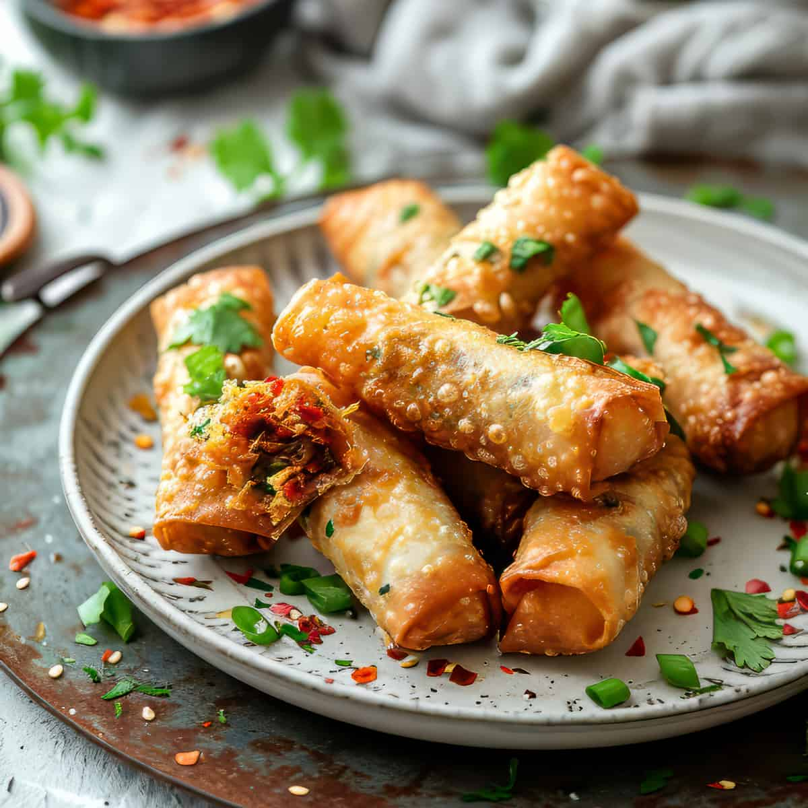

Spring Rolls

Ingredients
- 200g spring roll wrappers
- 1 cup shredded cabbage
- 1 cup grated carrots
- 1/2 cup bean sprouts
- 2 tbsp soy sauce
- Oil for frying
Preparation Time
25 minutes
Instructions
- Mix cabbage, carrots, and bean sprouts with soy sauce.
-
Place a small amount of the mixture in a wrapper and roll tightly.
- Heat oil in a pan and fry rolls until golden brown.
- Serve hot with dipping sauce.
Back to Chinese Cuisine